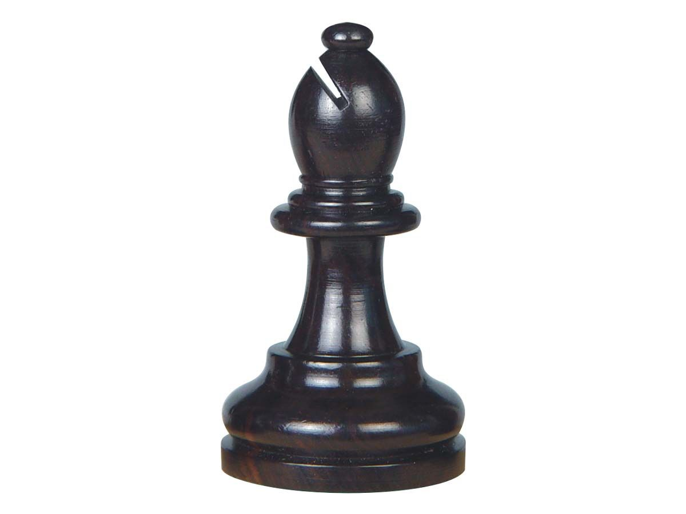

Слон
Слон — шахматная фигура, которая ходит по диагонали на любое число клеток. У каждого игрока по два слона: один ходит только по белым полям, другой — по чёрным. В зависимости от этого слона называют белопольным или чернопольным. Слон не может перепрыгивать через фигуры — путь должен быть свободен.
По месту расположения в начале игры и до первого сделанного хода слонов делят на королевских (стоящих возле короля) и ферзевых (стоящих возле ферзя).
